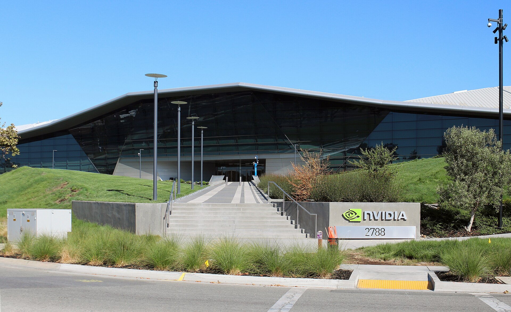

Vol. I · No. 132 · Wednesday, October 7, 2026 · 12 items · 10.0 min read
Five AI borrowers came to market in a day, and Fitch marked Skydance down before its first close.
Corporate · New York
SpaceX is seeking $40 billion of debt for Nvidia chips, on a day five AI issuers came to market

Nvidia’s headquarters in Santa Clara. Its processors are the collateral, or the purpose, in most of Tuesday’s financings. — Wikimedia Commons
SpaceX is seeking about $40 billion to buy Nvidia processors, the Financial Times reported on Tuesday evening, in a financing led by . Reuters, citing the paper, put the split at about $10 billion of bank loans and $30 billion of , with Pimco among the lenders in talks and a close expected in 2027. SpaceX shares fell 1 percent in extended trading.
AI infrastructure will require $1.5 trillion in external financing by 2028.
— Reuters, citing a Morgan Stanley estimate, October 7
It was the largest of five financings to surface in a single day. Lambda, a , is raising up to $4 billion led by Blackstone and Coatue at a $14.5 billion , the Wall Street Journal reported, in what the company calls its last private round before a 2027 listing. Its backlog rose from $15 billion in June to $50 billion in September, and $35 billion of that is one contract with Anthropic. Waymo increased its first debt deal to $5 billion from $3 billion, according to Bloomberg.
Two more are headed for public markets. DayOne Data Centers filed for a Nasdaq listing of under the ticker DODC, with Morgan Stanley, JPMorgan, Bank of America and Citigroup, seeking up to $5 billion. Its first-half revenue was $512 million against $151.5 million a year earlier, and its net loss widened to $77.2 million from $12.6 million. Bloomberg reported that DeepSeek is close to raising at least $12 billion ahead of an offering early in 2027.
Corporate · New York and Los Angeles
Fitch cut Skydance to BB on its first day and put leverage at 7.8 times
Fitch lowered Skydance’s to BB from BB+ on Tuesday, the day the company closed its purchase of Warner Bros. Discovery, citing “higher leverage and risks associated with combining the two companies.” The Desk, which reported the action, put total debt at $87.5 billion, including $44.5 billion of first-lien and $12.4 billion of secured paper, and gave Fitch’s leverage estimates as 7.8 times this year, 6.2 times in 2027 and 4.5 times in 2028. Other outlets use a debt figure near $80 billion.
The stock fell 2.7 percent in its first New York session, according to Variety. David Ellison and told staff in a memo that “integrating two companies will bring change, including difficult decisions that affect our workforce.” Front Office Sports put the ticking fees paid to Warner holders at $41.9 million. Deadline reported that Ellison expects HBO Max and Paramount+ to combine after a bundling phase.
AI · San Francisco
Anthropic’s prospectus shows Dario Amodei was paid $18 million last year
Dario Amodei received $18 million in total compensation for 2025, according to a seen by Reuters, which reported the figures on Tuesday. His salary was $1.4 million, doubled in July 2025, and the rest came in stock and options. Daniela Amodei, the president and his sister, received $16.4 million. The chief financial officer, Krishna Rao, received $720,250. Reuters described a potential valuation above $2 trillion.
The siblings have pledged 80 percent of their personal equity in Anthropic, a Delaware , to charitable causes. Reuters set the pay against an S&P 500 average of $22.8 million, with Sundar Pichai at $10.9 million and Andy Jassy at $2.1 million. “Founder CEOs typically own enough equity that when the company does well,” said Courtney Yu of , “they can just live off the wealth of the equity.” The report named no exchange, underwriter or counsel.
AI
A machine floods mathematics, and the government renames the machine
AI · San Francisco and Princeton
OpenAI published 372 sets of new mathematics, and almost none has been checked
The Institute for Advanced Study, whose advisory group helped write the rules for citing the results. — Wikimedia Commons
OpenAI released a repository of mathematical results on Tuesday evening from an internal model it did not name. The company’s post says many of the proofs come with formalizations in , and that the average result took about three hours of the thinking available to a ChatGPT Pro subscriber. Scientific American counted 372 sets of results, nearly all from a single prompt to one agent, a month after the same effort resolved one of the field’s largest open problems.
The protocols for citing and revising the work were written with an advisory group at the . One entry claims , open since 1969, according to a commenter quoted by Simon Willison. “Hearing that it is solved somehow makes me sad in a far-off way,” wrote Jake Boggan, who said he had worked on it for 24 years. No outside referee has confirmed that entry.
AI · Washington
Justice Department lawyers are told to write “super intelligence” in court filings
The acting , Trent McCotter, told Justice Department staff on Tuesday to use “super intelligence” and “SI” in place of “artificial intelligence” in public statements, policy documents, official records and court filings “when appropriate,” Bloomberg Law and Reuters reported. The memo applies a September 29 . It has already reached the Southern District of New York, whose release on a streaming fraud sentence the same day carried the new term in its headline. The plea release in March said artificial intelligence.
Markets & Deals
A clean auction with a thinner foreign bid
Corporate · Washington and New York
The three-year sold at 4.932 percent, and foreign buyers took less of it
Treasury sells $39 billion of ten-year notes at 1 p.m. today and $22 billion of thirty-year bonds on Thursday. — Wikimedia Commons
Treasury sold $58 billion of three-year notes on Tuesday at a high yield of 4.932 percent, a of 0.2 basis points, with bids for 2.62 times the amount offered, Newsquawk reported. took 57.6 percent against a six-auction average of 65.9, and direct bidders took 31.7 percent against 21.5. Treasury’s own curve closed with the two-year at 4.79 percent, the ten-year at 5.27 and the thirty-year at 5.64, leaving twos and tens 48 basis points apart.
The rally did not last the night. The ten-year was back at 5.34 percent on Wednesday morning, with Brent above $100. Futures put the odds of an increase at the October 27 and 28 meeting at 21.6 percent and at 68.6 percent by December, Reuters reported. called AI “one of the largest drivers of inflation,” according to FXStreet. The September minutes are due at 2 p.m.
Law & the Courts
A pleading rule for 401(k) suits, and a network asks for protection
Law · Washington
The justices seemed ready to keep a benchmark rule for 401(k) suits and to loosen it
Anderson v. Intel, No. 25-498, was argued on Tuesday morning. — Wikimedia Commons
The Supreme Court heard Anderson v. Intel on Tuesday, a case about what workers must plead when they say a retirement plan was invested imprudently. The Ninth Circuit threw out a challenge to Intel’s allocation to hedge funds and private equity because the complaint named no “.” Justice Barrett said the two sides seemed to agree on the standard and were “fighting a little about what is meaningful,” and worried that courts would demand an investment “twin,” Bloomberg Law reported.
Justices Gorsuch and Kavanaugh pressed Matthew Wessler of , for the workers, on whether he had shifted from the question presented. Charles McCloud of Williams & Connolly argued for Intel’s committee. “We could do something useful here, couldn’t we,” Justice Kagan said, “by saying: Yeah, it needs to be meaningfully similar.” Gorsuch said the Court would not decide how much underperformance matters to a prudence claim under .
Law · Washington
Disney told a judge the FCC is holding a guillotine over ABC’s licenses
Disney asked Judge in Washington on Tuesday for a temporary restraining order against the ’s early review of the licenses for ABC’s eight owned stations. Chairman Brendan Carr ordered the review in April, a day after the president urged ABC to fire Jimmy Kimmel, Reuters reported. The licenses were not due for renewal until October 2028. Disney’s filing says the agency wants to “coerce and retaliate against a network that refuses to bow.” The commission has agreed to give 48 hours’ notice before acting. No ruling had been reported by press time.
The World
Oil back above $100, and a spy chief in custody
News · Tehran, Muscat and Riyadh · cross-spectrum LLLCR
Iran’s oil minister resigned as Brent settled back above $100
The strait, with Oman’s Musandam peninsula to the south. A tanker was hit off its coast this week. — Wikimedia Commons
Brent settled at $101.51 on Tuesday, up 0.92 percent, after dipping below $100 earlier. Iran’s oil minister, Mohsen Paknejad, resigned, Fox News reported, and the Treasury secretary, Scott Bessent, said Iran “has not loaded a single barrel of crude onto a vessel since Aug. 25.” A Panama-flagged tanker, the On Peace, was hit by a projectile nine nautical miles off Limah, Oman, and caught fire. Twelve of its nineteen crew were injured and Oman’s air force flew ten to hospital in , Al Jazeera reported. No one claimed the attack, and accounts differ on whether it came on Monday or Tuesday.
Saudi Arabia said its is carrying 5.8 million barrels a day against capacity of 7 million. JD Vance asked why Iran needs “ fuel” if it does not want a weapon, which analysts quoted by Al Jazeera read as a retreat from zero enrichment. President Pezeshkian called talks meaningless.
News · Karlsruhe · cross-spectrum LCR
Germany arrested a former head of its foreign intelligence service on suspicion of treason
August Hanning, 80, who ran the BND from 1998 to 2005, was arrested on Tuesday, and ZDF reported that he was due before an investigating judge of the on Wednesday. Prosecutors suspect that a former office manager to several BND presidents passed him about 2,000 classified documents for payment between 2010 and June 2022, and that Hanning used them in consulting work. One alleged act is an analysis drafted for an officer of a foreign service, which prosecutors have not named. The case began with a search in the investigation.
Entertainment & EASL
A fraud sentence, and an awards show leaves broadcast
Culture · New York
The first criminal streaming-fraud case in the United States ended in an 18-month sentence
Foley Square in Manhattan, home of the Southern District of New York. — Wikimedia Commons
Judge sentenced Michael Smith, 54, of Cornelius, North Carolina, to 18 months in prison on Tuesday for using bot accounts to stream hundreds of thousands of machine-generated songs. Smith forfeits $8,091,843.64. He pleaded guilty in March to one count of wire fraud conspiracy. Music Business Worldwide reported that the guidelines range was 46 to 57 months, that prosecutors asked for at least 46 and that the probation office recommended 24.
The scheme ran from 2017 to 2024 across Spotify, Apple Music, Amazon Music and YouTube Music. In April 2023, the Justice Department said, Taylor Swift’s catalog drew 9.3 million streams on YouTube Music family plans while Smith’s bots produced 80.9 million. Services pay from a , so the loss fell on other artists. The stopped his publishing payments that year.
Culture · Los Angeles
The Emmys leave broadcast for Prime Video in a six-year deal
The Television Academy and Amazon said on Tuesday that Prime Video will carry the Primetime Emmys exclusively for six years beginning with the 2027 ceremony, free to watch without a subscription in more than 240 countries and territories. The deal ends the that rotated the show among ABC, CBS, Fox and NBC, under which TheWrap put the license fee at about $8 million a year. Amazon’s fee was not disclosed. The Creative Arts Emmys are included. The Daytime Emmys, which belong to a , are not.
Compiled by Matthew Yellin · mattyellin.com · Est. May 2026 · A cross-spectrum brief drawn each morning from wires, filings, and the trade press